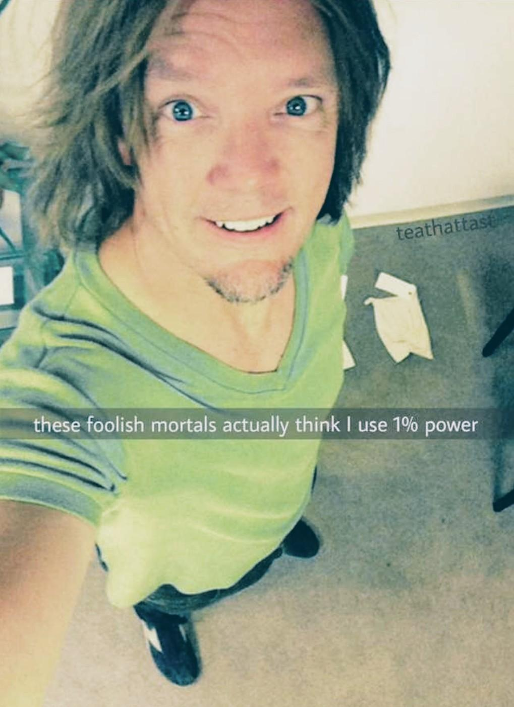
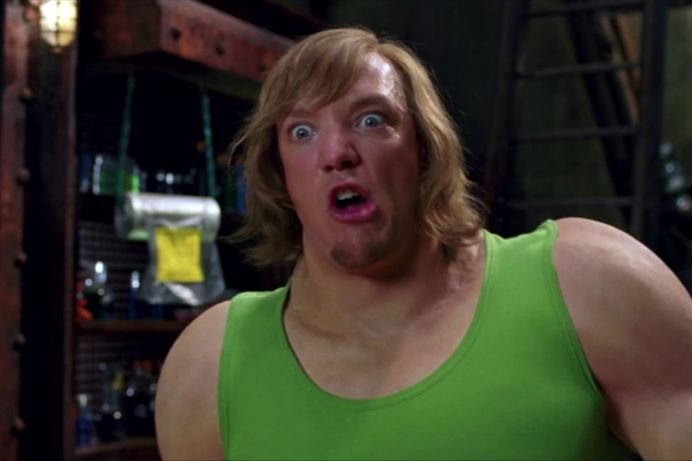
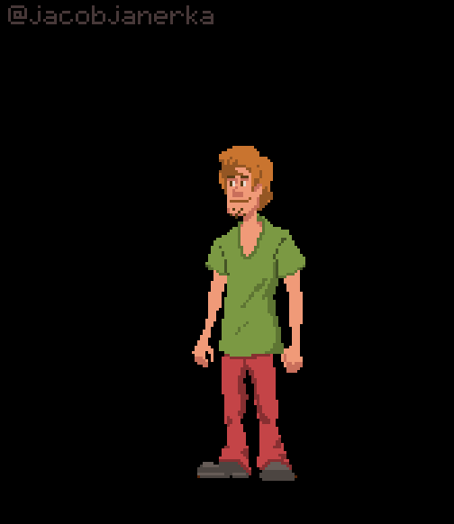
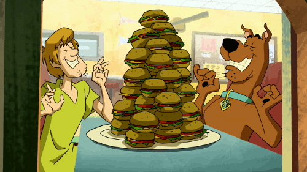

Shaggy has power beyond measure, so much so infact that he is never been seen/ reocorded using more than 98% of his power. However that was done while doing one of the Scoody Doo movies and the memes of him that he is trying to keep it alive. However that was one instance most of the time he can only use .5% with out hurting reality. YOu might be thinking that this is just a cartoon though right. Well I am sorry to tell you that shaggyes secret identaty has been revealed as he has truely willed himself in to being. His secret identaty has shown that he is truly shaggy hidding in plain sight.

And If you wish to see more proof on this atter in regards to Shaggy's power Look below...

links
- https://www.youtube.com/watch?v=dNHwsigk_-I
- https://www.youtube.com/watch?v=s5TU13vK9jc
- https://www.youtube.com/watch?v=BQwVq0C-RcA
- https://www.youtube.com/watch?v=dg_v3Q-x3mo

When it comes down to it shaggye's powers are incomparable to that of the entier the Marvel cinematic universe

oddly enough shaggy sometimes goes on an all vegan diet. This is due to the fact that he tends to be eating roughly half his waight quite offten.